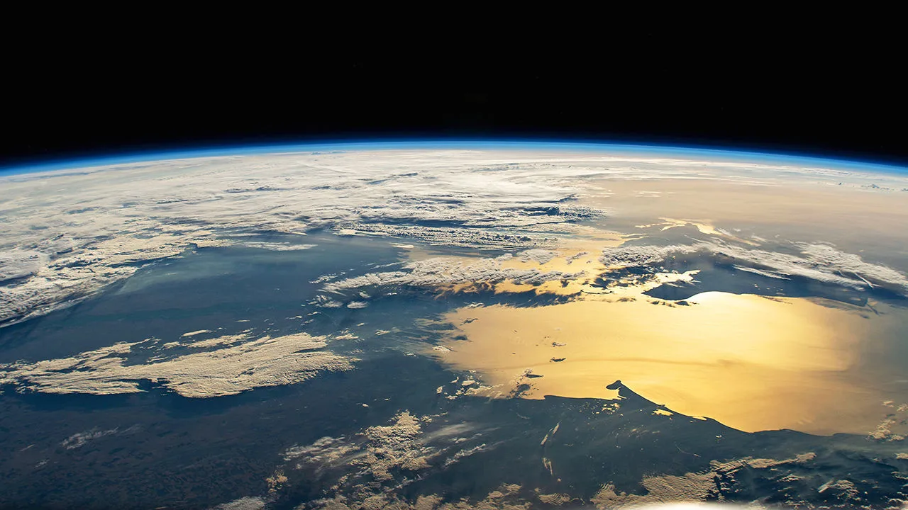

Dumitru Prunariu, the first and only Romanian to travel to space.
Dumitru Prunariu is a Romanian cosmonaut, aerospace engineer, and former diplomat, best known as the first and only Romanian to travel to space. He was born on September 27, 1952, in Brașov, Romania, and developed an early interest in aviation and engineering.
Prunariu was part of the Intercosmos program, a Soviet initiative that allowed astronauts from allied countries to participate in space missions. During his time in space, he conducted scientific experiments related to Earth observation, microgravity, and space technology. He remains an influential figure in the field of space policy and has held leadership positions, including serving as the President of the United Nations Committee on the Peaceful Uses of Outer Space (COPUOS).
